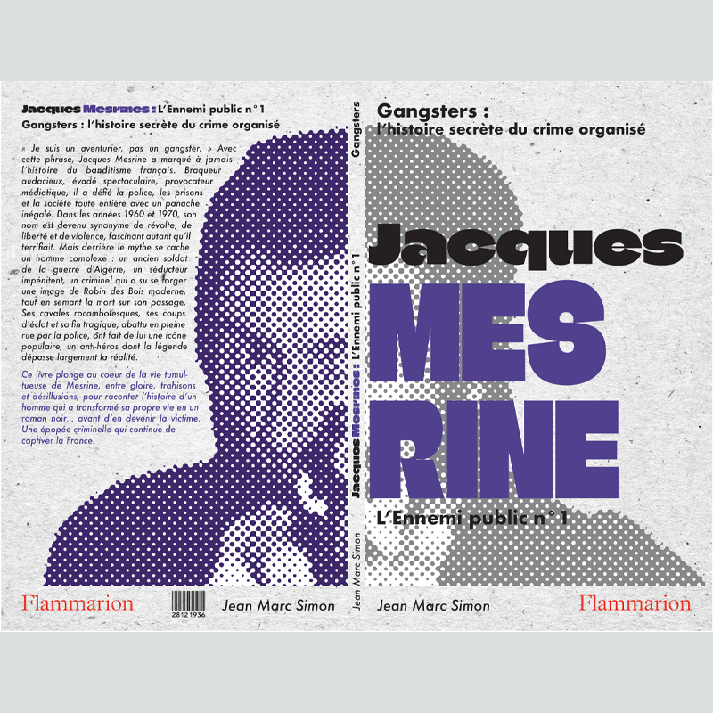
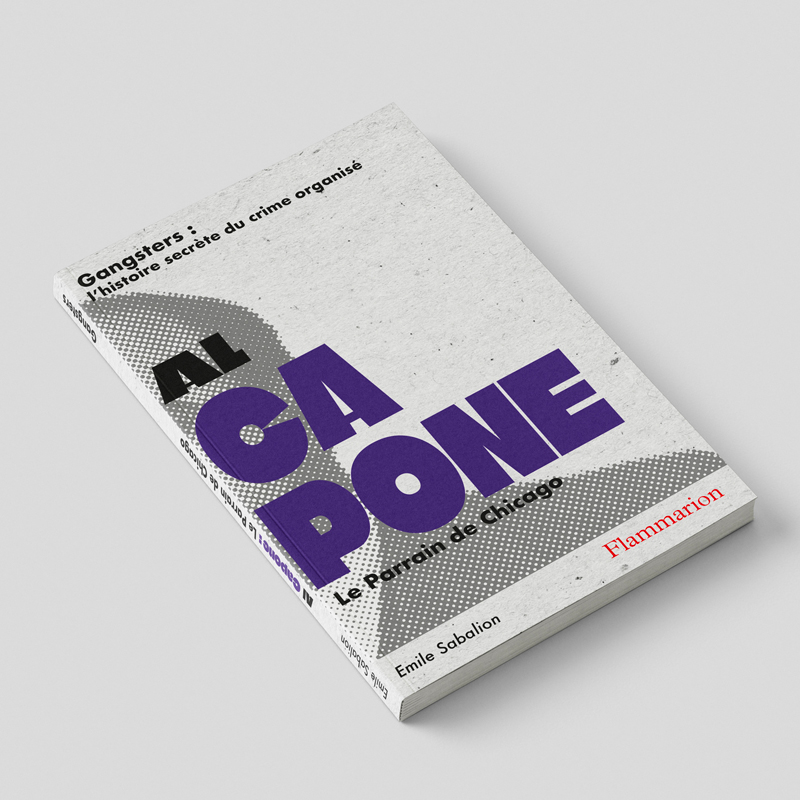
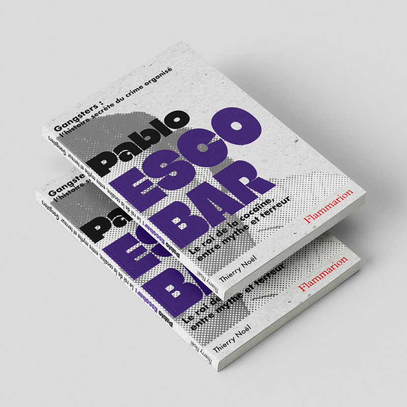
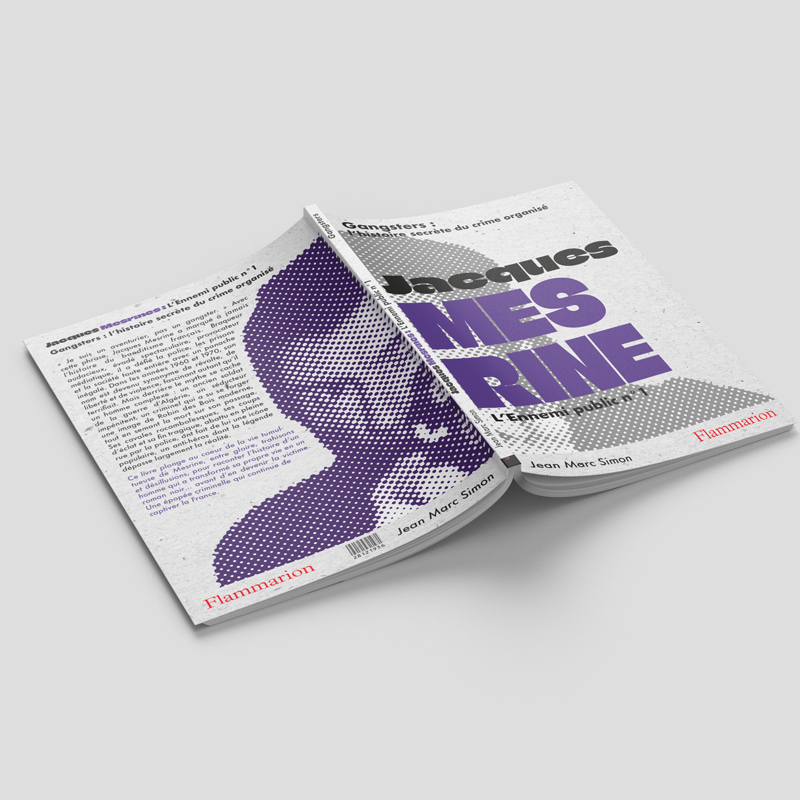

Gangsters
Édition
2026
Projet d’édition : collection fictive «Gangsters : l’histoire secrète du crime organisé» aux éditions Flammarion.
Réalisation de 3 exemplaires concernant les gangsters Al Capone, Pablo Escobar et Mesrine - connus pour leurs nombreux crimes.
Objet final : édition à l’aspect contemporain et révélant le caractère inquiétant des gangsters. S’adresse à un public curieux ainsi qu’aux amateurs d’histoires et d’affaires «sensibles».



